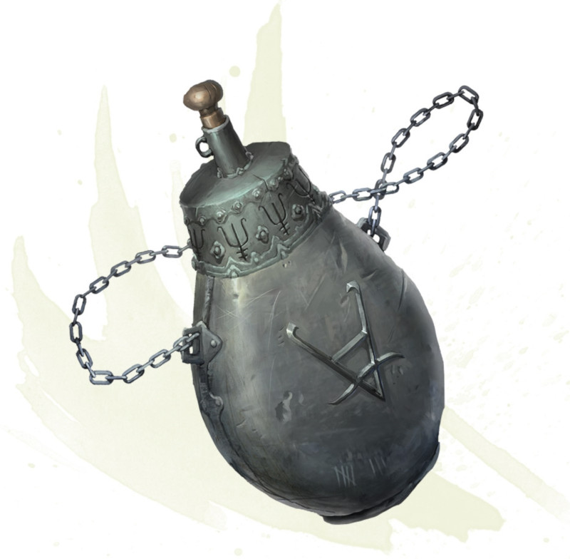

Flasque de fer
[ Iron Flask ]
Objet merveilleux, légendaire
Cette urne en fer possède un bouchon en laiton. Vous pouvez utiliser une action pour prononcer le mot de commande de la flasque, tout en ciblant une créature que vous pouvez voir et se trouvant à 18 mètres de vous maximum. Si la cible est native d'un autre plan d'existence que celui sur lequel vous vous trouvez, la cible doit réussir un jet de sauvegarde de Sagesse DD 17 sous peine d'être emprisonnée dans la flasque. Si la cible a déjà été emprisonnée dans la flasque par le passé, elle a un avantage à son jet de sauvegarde. Une fois capturée, une créature reste dans la flasque jusqu'à ce qu'elle soit libérée. La flasque ne peut contenir qu'une seule créature à la fois. Une créature prisonnière de la flasque n'a pas besoin de respirer, manger, ou boire, et ne vieillit pas.
Vous pouvez utiliser une action pour enlever le bouchon de la flasque et libérer la créature qu'elle contient. La créature est amicale envers vous et vos compagnons pendant 1 heure et obéit à vos ordres pendant toute cette durée. Si vous ne lui donnez aucun ordre ou si vous lui donnez un ordre qu'il la mènera vers une mort certaine, la créature se défend elle-même mais n'entreprend aucune autre action. À la fin de cette durée, la créature agit conformément à ses dispositions naturelles et à son alignement.
Un sort d'identification révèle si une créature se trouve dans la flasque, mais le seul moyen de déterminer le type de la créature est d'ouvrir la flasque. Une urne nouvellement découverte pourrait déjà contenir une créature choisie par le MD ou déterminée aléatoirement.
Vous pouvez utiliser une action pour enlever le bouchon de la flasque et libérer la créature qu'elle contient. La créature est amicale envers vous et vos compagnons pendant 1 heure et obéit à vos ordres pendant toute cette durée. Si vous ne lui donnez aucun ordre ou si vous lui donnez un ordre qu'il la mènera vers une mort certaine, la créature se défend elle-même mais n'entreprend aucune autre action. À la fin de cette durée, la créature agit conformément à ses dispositions naturelles et à son alignement.
Un sort d'identification révèle si une créature se trouve dans la flasque, mais le seul moyen de déterminer le type de la créature est d'ouvrir la flasque. Une urne nouvellement découverte pourrait déjà contenir une créature choisie par le MD ou déterminée aléatoirement.
| d100 | Contenu |
|---|---|
| 1-50 | Vide |
| 51 | Arcanaloth |
| 52 | Cambion |
| 53-54 | Dao |
| 55-57 | Démon (type 1) |
| 58-60 | Démon (type 2) |
| 61-62 | Démon (type 3) |
| 63-64 | Démon (type 4) |
| 65 | Démon (type 5) |
| 66 | Démon (type 6) |
| 67 | Déva |
| 68-69 | Diable (supérieur) |
| 70-72 | Diable (inférieur) |
| 73-74 | Djinn |
| 75-76 | Éfrit |
| 77-78 | Élémentaire (tous types) |
| 79 | Githyanki, chevalier |
| 80 | Githzerai, zerth |
| 81-82 | Traqueur invisible |
| 83-84 | Maride |
| 85-86 | Mezzoloth |
| 87-88 | Guenaude nocturne |
| 89-90 | Nycaloth |
| 91 | Planétar |
| 92-93 | Salamandre |
| 94-95 | Slaad (tous types) |
| 96 | Solar |
| 97-98 | Succube/incube |
| 99 | Ultroloth |
| 100 | Xorn |
Dungeon Master´s Guide (SRD)
